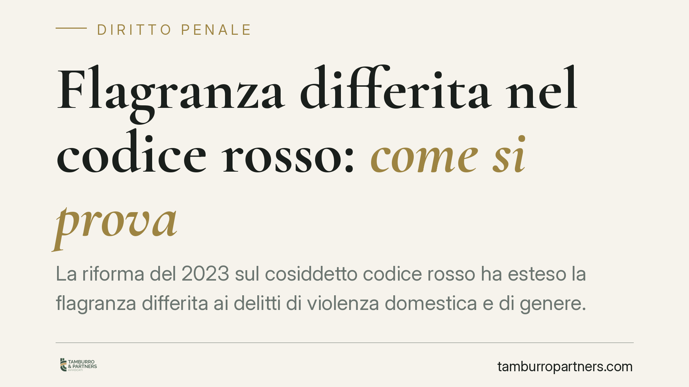

Flagranza differita nel codice rosso: come si prova
La riforma del 2023 sul cosiddetto codice rosso ha esteso la flagranza differita ai delitti di violenza domestica e di genere. Significa che la polizia giudiziaria può arrestare anche dopo i fatti, sulla base di prove tecnologiche. Ma i presupposti sono stringenti e il giudice, in convalida, li verifica uno per uno. Vediamo come si prova e dove si gioca la difesa.

Di cosa parliamo
La flagranza, nella regola generale, presuppone la contestualità: si arresta chi viene colto mentre commette il reato o subito dopo. La flagranza differita rompe questo nesso temporale. Consente l'arresto anche a distanza di tempo dal fatto, purché sussistano elementi probatori qualificati.
Il legislatore l'ha introdotta in origine per le manifestazioni sportive e, con gli interventi del 2023, l'ha estesa all'ambito della violenza domestica e di genere (il cosiddetto codice rosso rafforzato). È un istituto recente, applicato a una materia delicatissima: la libertà personale. Per questo ogni dato normativo va maneggiato con precisione.
Un avvertimento sui riferimenti normativi
Nel 2023 sono intervenuti più strumenti sulla materia (in particolare la L. 168/2023 e il cosiddetto decreto Caivano, D.L. 123/2023 convertito). La collocazione codicistica esatta della norma sulla flagranza differita per i reati di genere, la sua numerazione (talvolta indicata come art. 382-bis c.p.p.) e il termine temporale preciso vanno verificati sul testo vigente prima di qualsiasi uso processuale.
Non è una formalità. In materia di libertà personale un riferimento sbagliato — una numerazione errata, un termine confuso con quello della disciplina sportiva — può viziare l'intero atto. Chi assiste la persona arrestata deve partire proprio da qui: quale norma, quale termine, quali reati-presupposto.
I reati-presupposto
La disciplina del codice rosso ruota attorno a un catalogo preciso di delitti: maltrattamenti contro familiari e conviventi, atti persecutori (stalking), violenza sessuale, diffusione illecita di immagini sessualmente esplicite (il cosiddetto revenge porn), lesioni aggravate in contesto domestico. L'applicabilità della flagranza differita è circoscritta a queste fattispecie. Fuori dall'elenco, l'istituto non opera.
Il doppio limite: prova e tempo
La flagranza differita regge su due cardini.
Il limite probatorio. Non basta un sospetto. Servono elementi che dimostrino in modo inequivocabile che una determinata persona ha commesso il delitto. La norma valorizza documentazione video, fotografica o informatica: riprese di videosorveglianza, immagini acquisite, dati digitali. Il requisito è l'univocità: la prova deve indicare quel soggetto, non un soggetto possibile tra tanti.
Il limite temporale. L'arresto può avvenire solo entro un termine fissato dalla legge, decorrente dal fatto. Entro quella finestra la polizia giudiziaria deve agire; superata, viene meno il presupposto. Il termine esatto va letto sulla disposizione applicabile e non ricavato per analogia da altre ipotesi di flagranza differita, dove i tempi sono diversi.
Quando manca anche solo uno dei due requisiti, l'arresto non è legittimo.
Cosa accade in convalida
L'arresto in flagranza differita non è l'ultima parola. Entro le 48 ore il pubblico ministero chiede la convalida; il giudice decide entro le successive 48 ore. In questa sede il giudice non prende atto, controlla.
Verifica che il fatto rientri nel catalogo dei reati-presupposto. Verifica che la prova tecnologica esista davvero e sia univoca. Verifica che il termine dall'evento sia stato rispettato. Se uno di questi passaggi non regge, l'arresto non viene convalidato.
È qui che si concentra l'attività difensiva: contestare l'univocità del materiale, eccepire il decorso del termine, mettere in discussione la riconducibilità del fatto alle fattispecie previste.
Perché conta per chi è coinvolto
Per la persona offesa, la flagranza differita è uno strumento di tutela che supera il limite della contestualità. Per chi è destinatario della misura, è un intervento sulla libertà che deve rispettare presupposti rigorosi.
Trattandosi di istituto recente, la giurisprudenza di legittimità è ancora in via di formazione: consigliamo prudenza verso ricostruzioni che diano per consolidati orientamenti non ancora stabilizzati.
Cosa fare in concreto
- Verifica immediata del titolo. Chiedi che venga identificata con esattezza la norma applicata e il termine temporale rispettato, confrontandoli con il testo vigente.
- Esamina la prova tecnologica. Pretendi l'ostensione del materiale video, fotografico o informatico e valutane l'univocità rispetto all'identità dell'arrestato.
- Controlla il catalogo dei reati. Accerta che il fatto contestato rientri effettivamente tra i delitti-presupposto del codice rosso.
- Calcola i termini. Ricostruisci data del fatto, momento dell'arresto e tempi di convalida, individuando eventuali decadenze.
- Prepara l'udienza di convalida. Imposta per tempo le eccezioni su univocità probatoria e rispetto del termine, da far valere davanti al giudice.
---
*Contributo informativo a cura di Tamburro & Partners — Avv. Giuseppe Tamburro. Non costituisce parere legale.*
Ogni condominio ha una storia a sé.
Se gestisci un'amministrazione e vuoi un confronto su una specifica questione condominiale, scrivi allo studio. Ti rispondiamo entro un giorno lavorativo.